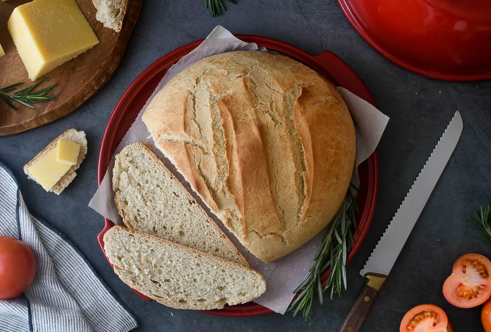
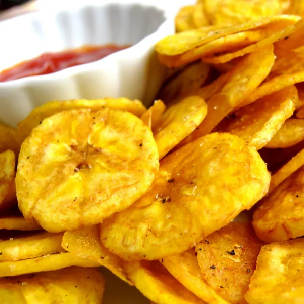

PAN CASERO

Ingredientes
- 200 ml de agua tibia (4/5 de taza)
- 21gr de levadura común (o 7gr de la seca)
- 400 g de harina 000
- 4 g de azúcar (1 cdta)
- 7 g de sal (1 cdta colmada)
Preparación
- Disolver la levadura fresca en agua a temperatura ambiente
- En un recipiente colocar la harina con una cdita. de sal. En el centro incorporar la mezcla de agua con levadura. Mezclar todo hasta unir bien.
- Una vez que la pasa está lista y elástica, colocarla nuevamente en un recipiente y dejar reposar 40 minutos o hasta duplicar su volumen
- Pasado el tiempo, doblar la masa sobre sí misma y dejarla en reposo por 40 minutos más.
- Colocar un poco de harina sobre una superficie, volcar en ella la masa y dividirla en 3 trozos iguales. Luego hacer un bollo con cada uno y dejarlos reposar por 15 minutos.
- Pasado el tiempo, formar rectángulos con cada uno de los bollos para luego darle la forma de baguette . Siempre tratando la masa con mucho cuidado.
- Formadas las tres tiras, colocar bastante harina sobre un repasador y acomodar las baguettes sobre este. Dejarlas levar hasta que doblen su volumen (40-60 minutos).
- Por último, colocarlas sobre una fuente para horno, realizar unos pequeños cortes por arriba e introducirlas al horno precalentado a 150º-160º.
- Debajo de la fuente se coloca otra con agua caliente para generar vapor durante la primera cocción. Si se empiezan a tostar se baja la temperatura y se continua la cocción.
PLATANITOS FRITOS

Ingredientes
- 2 plátanos machos
- Aceite vegetal, preferiblemente de girasol
- Una pizca de sal
Preparación
- Lo primero que debes hacer es pelar los plátanos.
- Cuando tengas los dos plátanos pelados, deberás cortarlos a rodajas muy finas para que el resultado sea un plátano frito crujiente tipo patatas chips. También puedes cortar las rojas un pelín más gruesas y aplastarlas con el culo de un vaso, por ejemplo, para que queden más finas. Añade sal al gusto.
- Ahora deberás poner abundante aceite de girasol a calentar en una sartén. Cuando esté caliente, añade las rojadas de plátano y fríelas como si fueran patatas. Muévelas de vez en cuando para que no se peguen y no las retires de la sartén hasta que estén bien doradas.